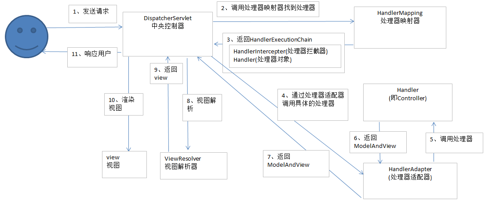

介绍
- SpringMVC是Spring Framework的一个模块。
- Spring和SpringMVC无需中间整合层。
- SpringMVC是一个基于MVC的web框架。
使用背景
在学习了一学期的JavaWeb后，记得老师最后让我们写一个MVC模式的项目，记得我当时把整个项目按照四层架构写好后，发现架构占据了整个开发的绝大多数时间（就是用Servlet+jsp+javaBean搭建一个MVC模式的项目，好吧我承认作为一个作业我硬是用四层架构有点刚=-=），体会就是：太太太太太难搭了！！！所以为了开发方便（其实是为了提前响应社会的需求哈哈哈），特此学习SSM（现在还在SpringMVC阶段=-=）。
SpringMVC和Spring Web MVC是不同说法的同种东西，后者更加强调了SpringMVC是为WEB项目服务的，也就是说SpringMVC是应用在B/S架构的系统上。
磨刀
MVC的基本思想就是数据模型和视图通过控制器分离，用户请求控制器，控制器向数据模型请求业务处理，之后控制器将数据模型返回的数据渲染到视图并返回给用户。这是MVC模式的整个运作流程。但是知道了MVC模式，具体的项目实施该怎样，我习惯将项目分为四层架构：实体层，数据接口层，业务逻辑层，web层。各个层次的主要任务如下：
- 实体层：就是项目中涉及到的实体，有的与数据库里的表对应，也有为了业务方便而自定义存在。
- 数据接口层：用来对实体进行操作的，也就是与数据库进行交互。
- 业务逻辑层：项目的业务逻辑都在这里设计，给表现层调用来实现业务请求。
- web层：项目的控制器或者与表现层相关的都在此层。可处理一些基本的非业务逻辑。
砍柴
SpringMVC的架构图

SpringMVC运作流程
- 用户将请求发送到前端控制器DispatcherServlet
- 前端控制器收到请求，调用处理器映射器HandlerMapping
- 处理器映射器查找处理器Handler（有配置xml和注解两种查找方式），生成处理器对象（如果有处理器拦截器则也生成）返回给前端控制器
- 前端控制器通过处理器HandlerAdapter是配置调用处理器
- 执行处理器（也叫后台控制器）
- 处理器执行返回ModelAndView
- 处理器适配器将处理器返回的ModelAndView返回给前端控制器
- 前端控制器讲ModelAndView返回给视图解析器ViewResolver
- 视图解析器解析后返回具体的视图View
- 前端控制器对视图进行渲染
- 前端控制器返回响应结果给用户
Notice：处理器和控制器是不同说法的同种东西。
各组件说明
- 前端控制器：框架提供。是整个运作流程的中心，调用其他组件来处理用户的请求
- 处理器映射器：框架提供。主要任务是查找控制器。SpringMVC提供多种映射器实现方式，例如：注解，xml配置等
- 处理器配置器：框架提供。作用就是执行控制器。这种适配器模式可以使得扩展适配器来对更多类型控制器进行处理
- 处理器：需要自己开发。也叫后端控制器。处理器适配器和处理器是配套使用的，所以开发控制器时，需要按照控制器适配器的规定去开发。一般在这里面调用业务逻辑层来实现用户业务请求。
- 视图解析器：框架提供。就是根据逻辑视图名解析到物理视图名，然后生成视图View对象给前端控制器来渲染数据。
- 视图：视图View是一个接口，其实现类支持不同的View类型（jsp,pdf等等）
结语
正所谓磨刀不误砍柴工，只有充分理解了MVC模式和四层架构才能理解SpringMVC的运作流程，而只有充分理解清除了SpringMVC的运作流程，才能学好SpringMVC。
comments powered by